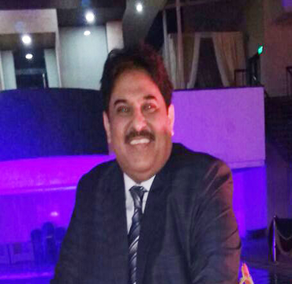
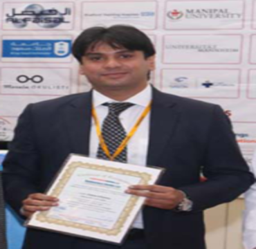
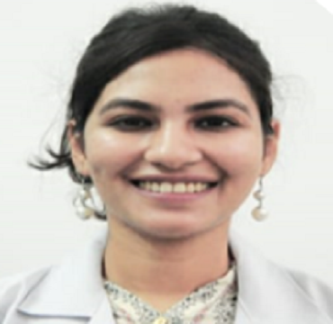

Dr. Rajinder Khanna is a leading cataract and refractive surgeon in Delhi NCR with more than 35 years of experience in private practice. He has also been actively involved in the surgical training of ophthalmologists across India.
He completed his MBBS from Anugrah Narayan Medical College in 1979, followed by his postgraduation from MDU Medical College, Rohtak, in 1984. He completed his fellowship from Aravind Eye Hospital in 1985.
Dr. Khanna has been associated with several developments in ophthalmic surgery and was among the pioneers of IOL surgery in North India. He was also among the early surgeons to introduce LASIK for spectacle removal in Delhi NCR and North India.

Dr. Sanjay Khanna completed his MBBS from King George Medical College, Lucknow, followed by his MS in Ophthalmology from Gulbarga in 1993.
With more than 25 years of experience in eye care, he has been associated with modern LASIK and refractive surgery and has been involved in the training of ophthalmologists.
Dr. Khanna was among the early practitioners of LASIK in Delhi and was also among the first to introduce customised LASIK procedures in India and Asia.
He has presented papers and participated as a guest faculty member at various national conferences.
MBBS, MD (AIIMS), FMRF (SN), FICO (UK)
Dr. Deepak Aggarwal is a dedicated Vitreo-Retinal Surgeon and Uvea Specialist at Khanna Eye Centre. He completed his postgraduate training at the All India Institute of Medical Sciences (AIIMS) and his fellowship in Vitreo-Retina from Sankara Nethralaya.
He currently heads the Retina Department at Khanna Eye Centre and has more than 15 years of experience in diagnostic and surgical vitreoretinal procedures.
His areas of clinical expertise include:
He has been performing microincision sutureless vitrectomy surgeries for more than 15 years.

MBBS, MS, FRVS
Dr. Aman Khanna is a Phaco, Vitreo-Retina and Uvea Consultant at Khanna Eye Centre. He completed his graduation from NDMVP's Medical College, Nashik, followed by his postgraduate training in Pune.
He completed his fellowship in Phacoemulsification and Vitreo-Retina from Sadguru Netr Chikitsalaya, Chitrakoot.
He has experience in managing a range of retinal conditions, including:
Dr. Aman Khanna has also been associated with teaching and training activities and has served as an instructor at state- and national-level conferences. He has been invited as faculty at various state and national conferences.

MBBS, MS, FCRS
Dr. Ankita Khanna is a Cornea, Phaco and Refractive Consultant at Khanna Eye Centre, New Delhi.
She completed her graduation in medicine and postgraduate training in ophthalmology from VMMC and Safdarjung Hospital, Delhi. She subsequently completed her fellowship in Phacoemulsification, Cornea and Refractive Surgery from Sadguru Netr Chikitsalaya, Chitrakoot.
She has experience in refractive surgery and corneal procedures, including corneal transplantation. She has also cleared the Clinical Examination of the International Council of Ophthalmology (ICO), London.
Dr. Ankita Khanna has presented oral papers and posters at national and international conferences. She has also participated as an instructor at state and national-level conferences and is actively involved in teaching and training activities.
From cataract and refractive surgery to corneal, retinal and uvea conditions, the Khanna Eye Centre team provides specialised ophthalmic care across a range of eye conditions and procedures.
Different eye conditions may require assessment by a specialist in a particular area of ophthalmology. Our team can help you identify the appropriate consultation based on your symptoms, diagnosis or treatment requirements.
Find a Specialist